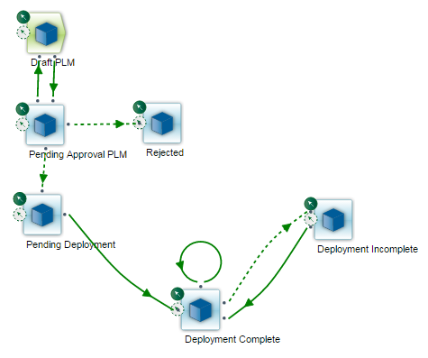

Understanding the Default Change Management Workflows
Siemens provides three change management workflows by default to allow you to begin deploying change management packages immediately.
| • | No Approval - Enables you to deploy change management packages from the source system without requiring approvals on the package. |
| • | Camstar - Requires approvals on change management packages before deploying from the source system. Selecting this option enables the Approvers tab on the Update Package page, enabling you to view the approval template and the assigned approvers. |
| • | PLM - Requires a Product Life Cycle Management (PLM) approval decision on change management packages before deploying from the source system. |
| Note: | Siemens provides the default MOM PLM workflow when you have installed the MOM workspace. Refer to the "Teamcenter Change Management" appendix for information. |
Each default workflow contains default change management specs. You can use or customize the provided change management specs and workflows or create your own to support your organization's business process model. Refer to the Opcenter Execution Medical Device and Diagnostics Modeling User Guide or the Opcenter Execution Core Modeling User Guide for information on the default change management specs and workflows and defining custom change management specs and workflows.
The roles assigned to the logged-in user and the allowable transactions assigned to the change management spec within the specified change management workflow determine the following:
| • | The actions the logged-in user can perform on the change management package, and |
| • | The flow of the package through the workflow. |
For example, a package at the Deployment Complete step in the No Approval workflow should not be available for selection on the Update Package page by any user regardless of their permissions. The package can be updated only when at the Draft step in the workflow.
A setting on the change management spec determines whether the modeling object instances are locked or unlocked when the change management package enters that spec (step) in the change management workflow. Both revisioned object (RO) instances and named data object (NDO) instances can be locked.
Selecting the Lock modeling instances in a Change Package at this Spec check box on a change management spec locks all instances when a package enters that spec. Clearing the check box on a change management spec unlocks all instances when a package enters that spec.
You can assign modeling object instances to multiple change management packages concurrently regardless of whether they are locked or unlocked in other packages. The modeling object instances remain locked when associated with a change management package until all packages with which they are associated are closed, voided, or returned to a draft step.
| Note: | The default draft step provided by Siemens unlocks the associated modeling object instances. You can configure this step (spec) and other specs to meet your business needs. |
Refer to the Opcenter Execution Medical Device and Diagnostics Modeling User Guide or the Opcenter Execution Core Modeling User Guide for information on configuring change management specs.
Revisioned Object Locking
Revisioned object instances can be locked using both revision and modeling locking. NDO instances can be locked using modeling locking.
You can include a locked RO in a change management package. An RO locked on the instance page remains locked regardless of whether it is locked or unlocked in a change management package. The lock on the Modeling page is not affected by change management.
The error message displayed when you try to modify or delete a locked RO indicates where the instance is locked. The error message specifies the object instance is locked either because of an association with a change management package or because it is locked (on the Modeling page).
Remember the following when using a default change management workflow:
| • | All default workflows start at a spec step with draft permissions. |
| • | The application transitions the package to the Deployment Complete or Deployment Incomplete spec step when a user with package ownership or deployment permissions deploys the package. |
| • | The package owner should close the package after the application deploys the package successfully and no further deployment is required. |
The default No Approval change management workflow contains three default change management specs (steps):
| • | Draft |
| • | Deployment Complete |
| • | Deployment Incomplete |
This image shows the default No Approval workflow:

The default Camstar and PLM change management workflows contain six default change management specs (steps):
| • | Draft Camstar |
Or
Draft PLM
| • | Pending Approval Camstar |
Or
Pending Approval PLM
| • | Rejected |
| • | Pending Deployment |
| • | Deployment Complete |
| • | Deployment Incomplete |
The workflows are identical with the exception of two specs: the initial draft spec and the pending approval spec. The initial spec for the Camstar change management workflow is Draft Camstar. The initial spec for the PLM change management workflow is Draft PLM. The pending approval spec for the Camstar change management workflow is Pending Approval Camstar. The initial spec for the PLM change management workflow is Pending Approval PLM.
Your selection of one of these change management workflows when creating the package determines the type of approval process for the package. Selecting the PLM workflow requires a user with package ownership permissions to approve the package before deployment. Selecting the Camstar workflow requires one or more users with package approver permissions to approve the package before deployment.
This image shows the default Camstar workflow.

This image shows the default PLM workflow.
